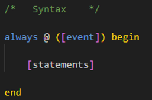
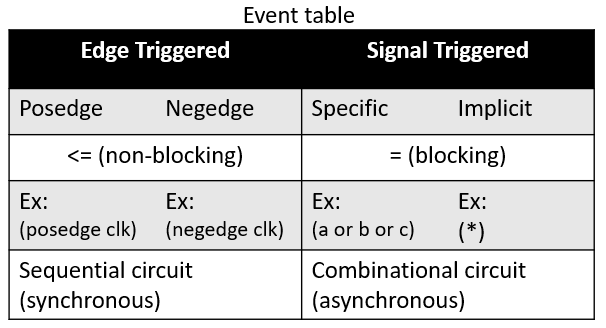

//circuit 1 module edge_clk ( input clk, input a, output b ); always (posedge clk) b <= a; end //circuit 2 signal( input a, output b ); @(*) begin b = a; endmodule
The output signal in always block must be declared as type reg.